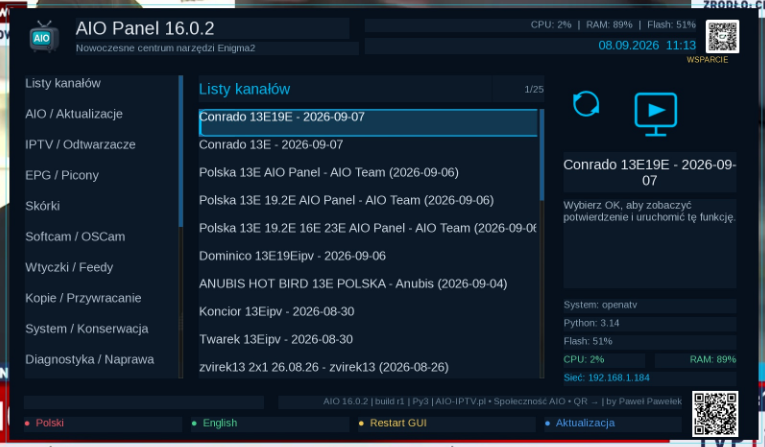
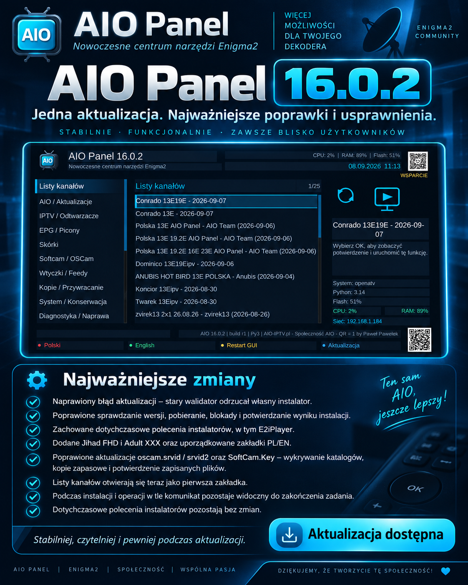

Witam na mojej stronie Paweł Pawełek
Aktualizacja stabilności • 08.09.2026
⚙️ AIO Panel 16.0.2
Jedna, spójna aktualizacja skupiona na stabilności mechanizmu aktualizacji, poprawnym działaniu najważniejszych funkcji oraz wygodniejszej codziennej obsłudze AIO Panel na tunerach Enigma2.

Najważniejsze zmiany w 16.0.2
- naprawiony błąd aktualizacji, przez który stary walidator potrafił odrzucać własny instalator
- poprawione sprawdzanie wersji, pobieranie plików, blokady oraz potwierdzanie wyniku instalacji
- zachowane dotychczasowe polecenia instalatorów, w tym E2iPlayer
- dodane Jihad FHD oraz Adult XXX
- uporządkowane zakładki PL / EN
- poprawione aktualizacje oscam.srvid / srvid2 oraz SoftCam.Key
- dodane wykrywanie właściwych katalogów, tworzenie kopii zapasowych i potwierdzenie poprawnie zapisanych plików
- Listy kanałów otwierają się jako pierwsza zakładka po uruchomieniu wtyczki
- podczas instalacji i operacji wykonywanych w tle komunikat pozostaje widoczny do zakończenia zadania
- dotychczasowe polecenia instalatorów pozostają bez zmian
🔄 Pewniejsze aktualizacje
Mechanizm aktualizacji został poprawiony w punktach, które odpowiadają za wykrycie nowej wersji, pobranie plików, walidację instalatora i potwierdzenie faktycznego wyniku operacji.
- mniej fałszywych odrzuceń aktualizacji
- lepsza kontrola blokad podczas instalacji
- czytelniejsze potwierdzenie sukcesu lub błędu
🔑 OSCam i SoftCam.Key
Poprawiono aktualizację plików oscam.srvid, oscam.srvid2 oraz SoftCam.Key.
- wykrywanie właściwego katalogu konfiguracji
- kopia zapasowa przed podmianą
- kontrola zapisu i potwierdzenie wyniku
📺 Wygodniejszy start
Po uruchomieniu AIO Panel pierwszą zakładką są teraz Listy kanałów — funkcja używana najczęściej przez wielu użytkowników.
Zakładki polskie i angielskie zostały dodatkowo uporządkowane, aby nawigacja była bardziej przewidywalna.
🧩 Instalatory bez regresji
Wydanie 16.0.2 nie zmienia działających poleceń instalacyjnych. Dotyczy to m.in. E2iPlayer i pozostałych pozycji, które wcześniej działały poprawnie.
Dodano natomiast nowe pozycje Jihad FHD i Adult XXX.
⏳ Czytelne operacje w tle
Podczas instalacji, pobierania i innych operacji wykonywanych w tle komunikat pozostaje widoczny aż do zakończenia zadania. Użytkownik widzi więc, że AIO Panel nadal pracuje i kiedy operacja faktycznie się zakończyła.
Co daje ta aktualizacja?
- pewniejsze aktualizacje
- lepsza czytelność działania
- bardziej przewidywalna obsługa funkcji systemowych
- wygodniejszy start od najczęściej używanej zakładki
- większa kontrola nad operacjami w tle
- mniejsze ryzyko regresji działających instalatorów
Plik i zgodność
Wersja: 16.0.2
Data wydania: 08.09.2026
Plik: enigma2-plugin-extensions-panelaio_16.0.2_all.ipk — 387.6 KB
SHA-256: 2b9cdbe8a8d9fe39d7a20b5f6d6684f8626d86ba4deae6500934f989749d1f62
Platforma: Enigma2.
Autor: Paweł Pawełek / AIO Team.
Galeria

Instalacja i aktualizacja
Po instalacji lub aktualizacji wykonaj Restart GUI.
wget -q -O - "https://raw.githubusercontent.com/OliOli2013/PanelAIO-Plugin/main/installer.sh?$(date +%s)" | /bin/shPolecenie korzysta z aktualnego instalatora projektu AIO Panel.
Instalacja pobranego IPK przez FTP
Wgraj plik do /tmp, a następnie wykonaj:
opkg install --force-reinstall /tmp/enigma2-plugin-extensions-panelaio_16.0.2_all.ipkDziękuję wszystkim za zgłoszenia, testy i uwagi — AIO Panel 16.0.2 jest już dostępny.